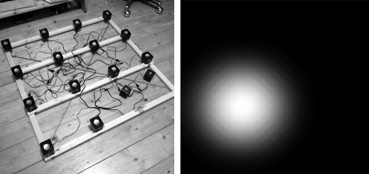
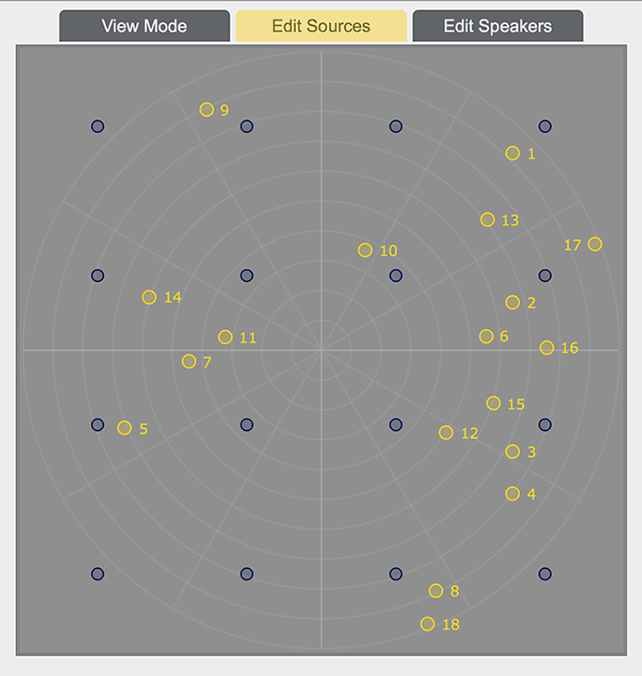

Verräumlichung der Klänge
Panning
Die Wiedergabe der Software-Instrumente wurde mit 16 Lautsprechern und zwei Subwoofern realisiert. Die Lautsprecher wurden in Abständen von einem Meter als 4 x 4 Raster unter den Bühnenelementen angeordnet. Über diese quadratische Fläche werden alle Instrumente als sich bewegende Klangquellen zu Gehör gebracht.
Um das Verhalten unterschiedlicher Panning-Algorithmen auf dieser Lautsprecheranordnung zu untersuchen, wurde ein Modell aus 16 einfachen Desktop-Lautsprechern angefertigt. Auf diesem ein Quadratmeter kleinen Modell konnte unter Verwendung von zwei Audio-Interfaces jeder der 16 Kanäle aus Max/MSP einzeln angesprochen werden.
Der erste Versuch ein Panning zu realisieren, bestand darin, eine Klangquelle mit Hilfe einer Videoanimation auf der Fläche zu positionieren und zu bewegen. Hierfür wurde mit Jitter eine quadratische Videomatrix mit schwarzem Hintergrund erzeugt. Vor diesem Hintergrund ist eine weiße Kreisfläche zu sehen, die per Eingabe der XY-Koordinaten über die Fläche gesteuert werden kann. Die Matrix wird mit einem Blur-Effekt bearbeitet, sodass der Rand des Kreises verschwimmt. Im nächsten Schritt werden die Grauwerte (0-1) von 16 Pixeln, die mit den Positionen der Lautsprecher im Modell korrespondieren, ausgelesen und als Verstärkungsfaktor mit dem jeweiligen Ausgangskanal multipliziert.

Wird nun ein Audiosignal an alle 16 Kanäle gleichzeitig gesendet, werden die dem Kreis entsprechenden Lautsprecherpositionen das Signal gemäß ihres Grauwertes wiedergeben, während aus allen dem schwarzen Bereich entsprechenden Lautsprechern kein Signal zu hören ist. Die Klangquelle konnte nun durch Eingabe der XY-Koordinaten in der Fläche positioniert werden und ließ sich in der Tat auch zwischen den Lautsprecherpositionen gut lokalisieren. Problematisch wird die Steuerung von mehreren Klangquellen, da diese sich überlagern, anstatt getrennt voneinander zu hören zu sein. Aus diesem Grund wurde im Folgenden auf eine ausgereiftere Lösung zurückgegriffen.
Trajectorys
Im Nächsten Schritt wurden verschiedene Externals für Panning-Algorithmen in Max/MSP getestet. Die überzeugendsten Ergebnisse lieferte ein Distance-based Amplitude Panning (DBAP) aus dem Package Jamoma. Die Bewegung der Klangquellen wirkt sehr fließend und zwischen den Lautsprecherpositionen ist eine eindeutige Lokalisierung möglich.
Jede Klangquelle kann über XY-Koordinaten über die quadratische Fläche gesteuert werden. Dies geschieht mittels manueller Eingabe der Werte oder über automatisierte Abläufe. Die Flugbahnen, die die Klangobjekte beschreiben, sind sogenannte Trajectorys. Der Wertebereich, in dem die Objekte Bewegungen in X- und Y-Richtung ausführen, liegt jeweils zwischen -1 und 1.
In der Installation geschieht die Erzeugung der XY-Koordinaten in Echtzeit mittels Oszillatoren und Rampengeneratoren, die zum Teil einzeln eingesetzt und zum Teil miteinander moduliert werden. So entsteht eine Vielzahl von Trajectorys. Die Klangobjekte führen lineare und kreis- oder spiralförmige Bewegungen bis hin zu Lissajous-Figuren aus.

Für jedes Instrument wurden Gruppen von Klangobjekten erzeugt, die sich nach einer bestimmten Form mit- oder gegeneinander bewegen. Kurze, perkussive Klänge führen tendenziell eher schnelle, lineare Bewegungen aus, während sich lange, tonale Klänge in langsamen, runden Trajectorys räumlich darstellen. Die Tonhöhenillusion thiD besteht beispielsweise aus zwei gegenüberliegenden Klangobjekten, die sich auf einer gegenläufigen, alternierenden Umlaufbahn um das Zentrum befinden. Die resultierende spiralförmige Bewegung korrespondiert dabei mit der endlos auf- oder absteigenden Tonhöhe.
Die Klangobjekte und ihre Bewegungen werden wesentlich glaubhafter wahrgenommen, wenn die Lautsprecher nicht zu sehen sind. Denkbar ist, dass die visuelle Verortung der Lautsprecher eine Erwartungshaltung gegenüber der Position des akustischen Ereignisses konstruiert. Wird die Sicht auf die Lautsprecher blockiert, so wird die Position des Klangobjektes regelrecht als tatsächliche Schallquelle angenommen.
Reverb
Das Panning der Klangobjekte findet auf einer Fläche statt. Um zusätzlich die dritte Dimension einzubeziehen und damit akustisch ein Gefühl von Tiefe zu simulieren, wurde ein Hall aus dem Package Ircam-Spat verwendet, der jedem Instrument mehr oder weniger stark hinzugemischt werden kann. Dieser spezielle Hall wird über alle 16 Lautsprecher dekorreliert wiedergegeben. Das bedeutet, die 16 Hall-Signale unterscheiden sich leicht voneinander, was zu einer stärker wahrgenommenen Räumlichkeit führt. Je höher der Hall-Anteil eines Instrumentes eingestellt wird, desto weiter öffnet sich der auditive Raum nach unten.